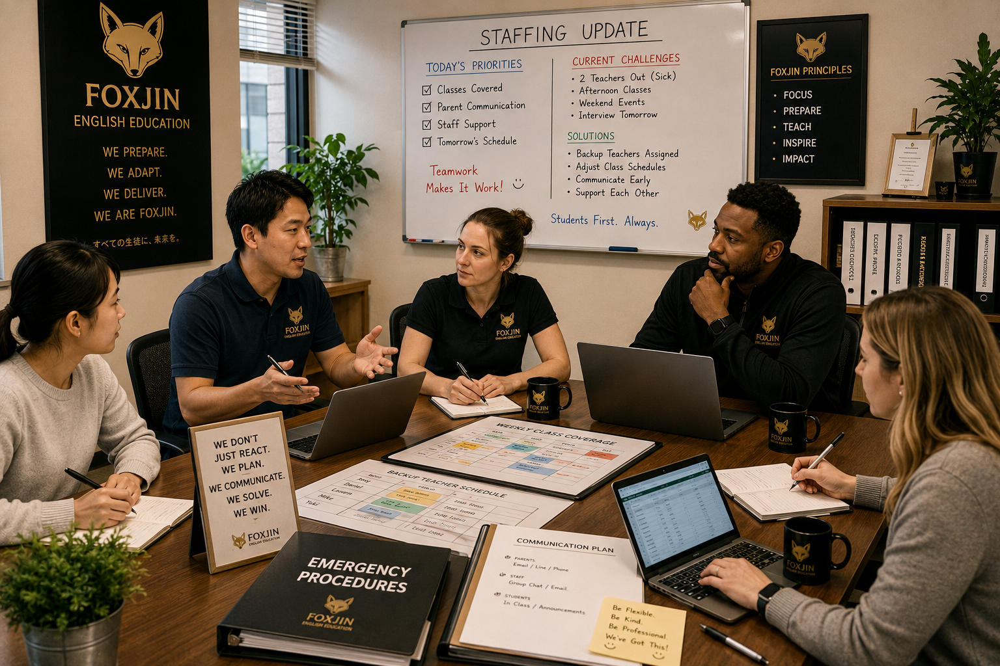
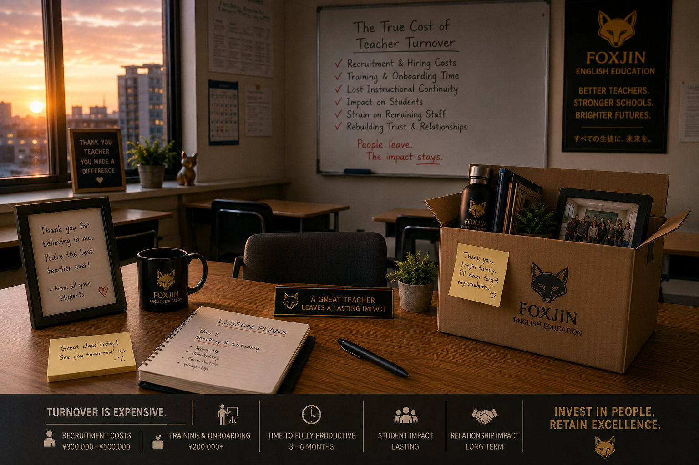

What Happens When Your English Teacher Calls in Sick?
A sudden morning absence can become a parent communication problem, staff stress problem, and trust problem.
FOXJIN SCHOOL MEDIA
Reporting, guides, and operational resources for school owners, English program managers, eikaiwa operators, and education teams.
Sudden teacher absences can disrupt lessons, parents, staff, and school trust. Here is how schools in Japan can prepare.
Read article →A sudden morning absence can become a parent communication problem, staff stress problem, and trust problem.
Practical preparation steps that help schools protect lessons, parents, and staff during unexpected absences.
A substitute teacher is more than a replacement. They help protect continuity and trust.
Temporary support can protect classroom continuity while schools solve long-term staffing challenges.
Building a backup plan before a crisis protects classes, parents, staff, and school reputation.
Classroom continuity, parent trust, and operational systems work together to protect schools.

Staff shortages affect more than schedules. Preparation and continuity planning reduce pressure.

Turnover affects scheduling, parents, staff morale, and classroom continuity more than many schools expect.
Hiring decisions affect classroom continuity, operations, parents, and long-term school stability.
Foxjin helps schools protect lesson continuity when staffing problems appear suddenly.
Contact Foxjin